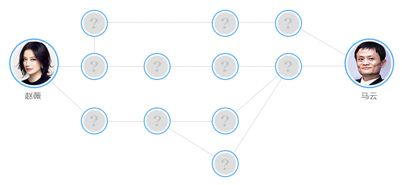
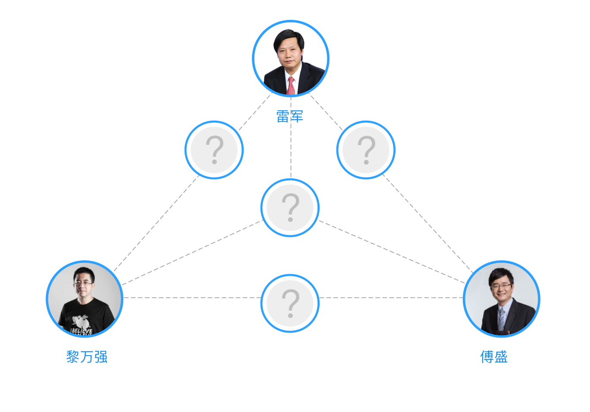

<div class="container mt-3">
  <div class="row">
    <div class="col-lg-3 col-md-12 card rounded-0 px-0" style="min-height: 1019px;">
      <div class="d-flex rel_head">
        <li class="flex-grow-1 active" [class.active]="select==0" (click)="select=0"><h2
          class="font-weight-bold my-3 f-15 text-center">两节点关系</h2></li>
        <li href="#" style="margin-right: -1px" class="flex-grow-1 active" [class.active]="select==1"
            (click)="select=1"><h2 class="font-weight-bold my-3 f-15 text-center">
          多节点关系</h2></li>
      </div>

      <app-two-node (emitter)="openGraph($event)" *ngIf="select==0"></app-two-node>
      <app-multi-node (emitter)="openGraph($event)" *ngIf="select==1"></app-multi-node>
    </div>


    <div class="col-lg-9 col-md-12" style="min-height: 1019px;">
      <div #card class="card rounded-0 ml-3" style="min-height: 1019px;background-color: #ffffff">
        <div *ngIf="select==0 && !flag" class="no_data d-flex flex-column align-items-center mt-5">
          
          <div class="f-16" style="color: #bbb">您可以添加两个公司或个人，一键分析即可查看其所有关联路径。</div>
          <div class="f-16" style="color: #bbb">示例：<span class="text-primary">如马云 赵微</span> 的关联路径分析</div>
        </div>

        <div *ngIf="select==1 && !flag" class="no_data d-flex flex-column align-items-center">
          
          <div class="f-16" style="color: #bbb">您可以添加多个公司或个人，一键分析即可查看其所有关联路径。</div>
          <div class="f-16" style="color: #bbb">示例：<a class="text-primary">如雷军 黎万强 傅盛</a>
            的关联路径分析
          </div>
        </div>

        <graph *ngIf="flag" [nodes]="nodes" [links]="links" [width]="width" [height]="height" [charge]="charge"
               style="height: 100vh"></graph>
      </div>
    </div>
  </div>

</div>

<app-footer></app-footer>
